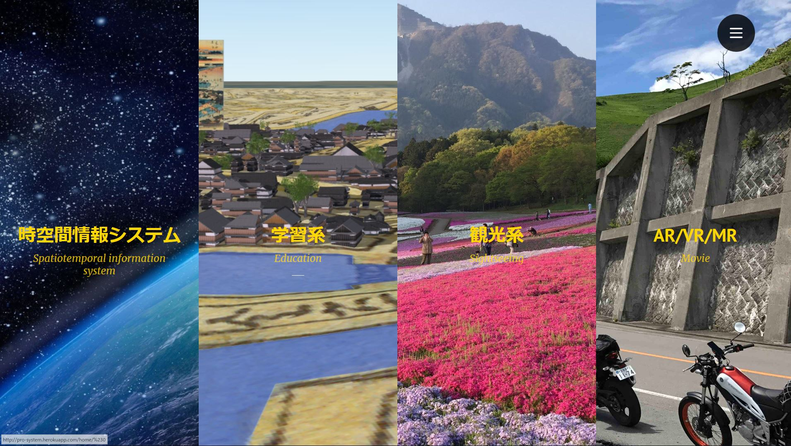
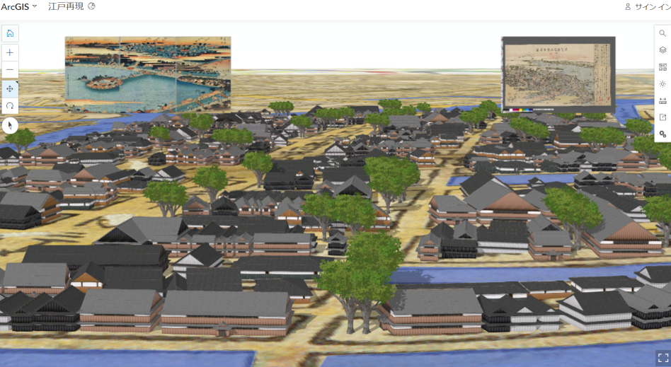
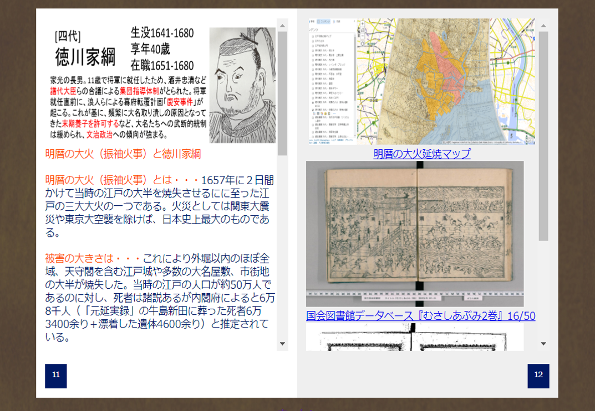
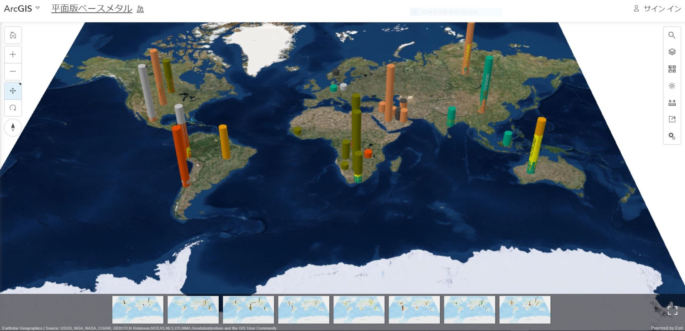
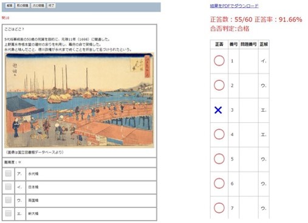
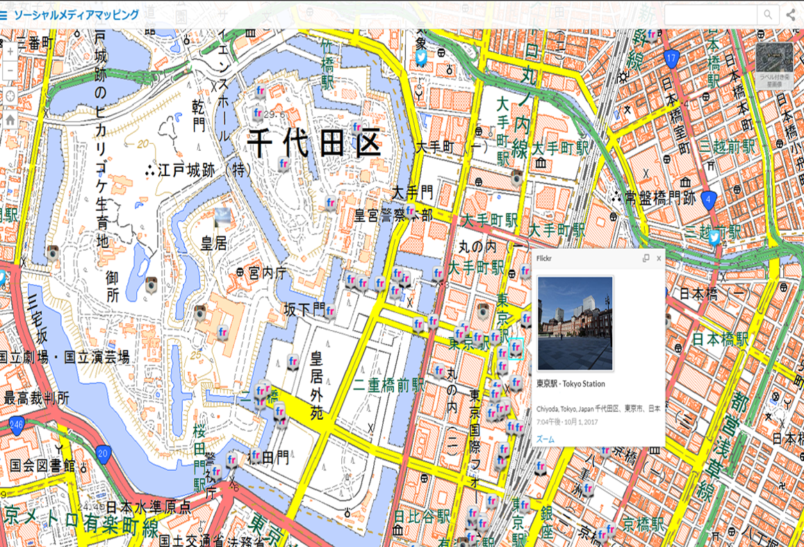
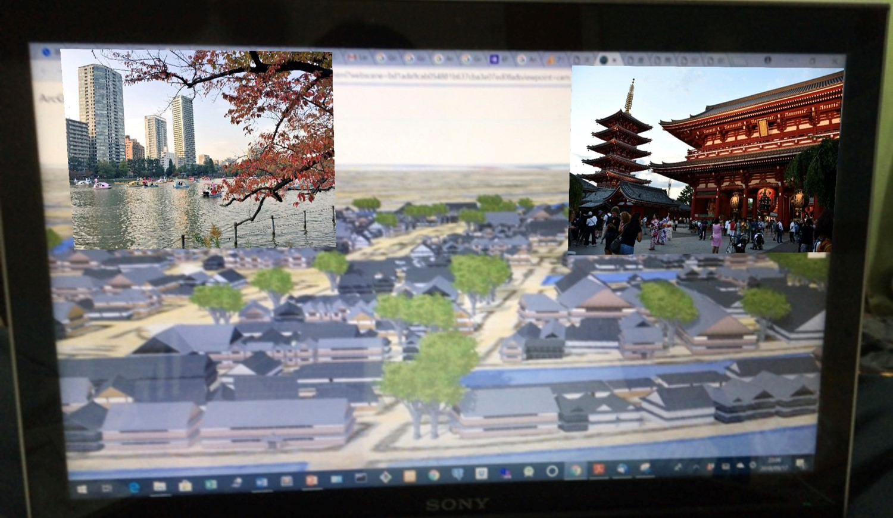
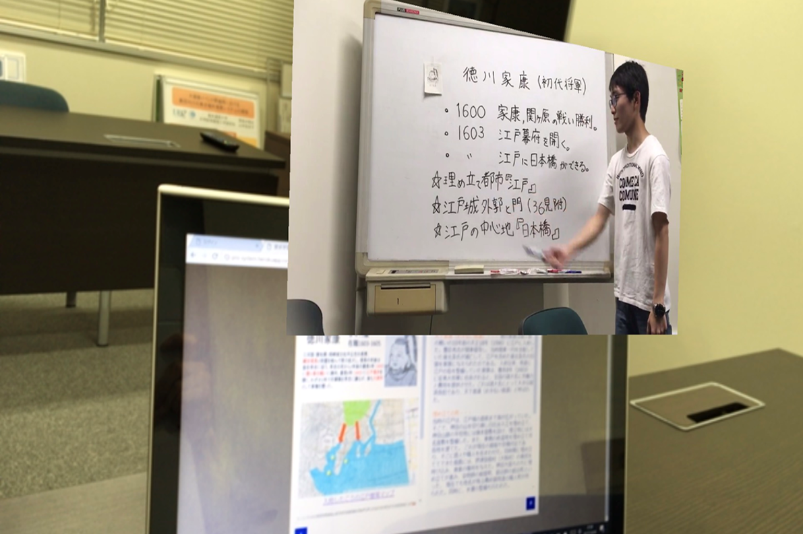
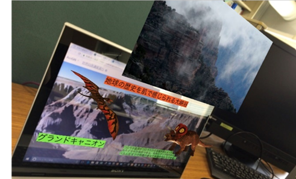
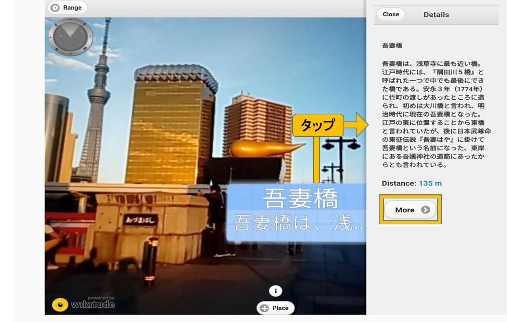

時空間情報システムの紹介（要：利用者登録）
2017年3月に閣議決定された「地理空間情報活用推進基本計画」では、産学官民が協調して高精度で利用価値の高い地理空間情報を高度に活用し、社会課題の解決や新産業・サービスを創出する「地理空間情報高度活用社会」（G空間社会）を目指すことを掲げた。
また、「空間情報」に経年変化などの時間情報を加えた「時空間情報」は、現在の空間情報に加えて、過去の情報も付加することができるため、地理や歴史、文化など幅広い分野で「時空間情報」を利活用した研究が盛んに行われるようになった。
一方、近年、仮想現実 (VR) や拡張現実(AR) が日々の生活に広く普及しつつある。
以上の学術的・社会的背景を踏まえ、本研究では、時空間情報を含めたGISに、娯楽や観光のためのシステムで使用されるVRとAR、仮想世界に現実世界の情報を重ね合わせた複合現実 (MR) を統合し、時空間情報を可視化する新しいシステム構築を目的とする。
なお、本システムは、地域の地理・歴史学習や観光支援に役立つことが期待できるとともに、G空間社会の実現の一助となることも期待される。
江戸・東京再現VR機能
この機能は江戸時代の街並みを古地図上に、現代の街並みを国土地理院標準地図上に再現したものである。江戸時代と現代の景観の違いだけでなく、古地図と現代地図、浮世絵と写真の比較による、時代の移り変わりを把握できる。
明暦の大火の延焼範囲レイヤーや、海水路レイヤーを表示させ、古地図を外せば、埋め立て地に関する情報や過去の災害の凄惨さを現在の地図に当てはめて視覚化できる。
歴史学習機能
江戸幕府全15代将軍が行った政策とそれが現代に与える影響、時代背景等を標準地図を使った空間情報と照らし合わせながら把握可能にした。
実際に現地に足を運び資料収集をし、さまざまな文献を基に独自作成したマップや写真等をテキストに反映させ、約50頁にまとめた。
各ページの内容に関連する地図や時空間情報とデジタル教科書間で相互に遷移することができるため、利用者にわかりやすい形式で情報提供が可能である。
また、参照した文献の引用元や本システムで閲覧可能な観光名所のウェブサイトにリンクを貼って、すぐにアクセスできるようにしている。
統計地理機能
統計地理機能では、統計データと地理情報を組み合わせて表示することができる。
例えば、平面デジタル地図に様々な資源の採集量を3D表示させることで、資源の採集地や採集量を視覚的に把握できる。
地理・歴史テスト機能
本システムで学べることを問題形式にまとめた地理歴史テスト機能である。
問題や選択肢はランダムで表示され、テスト結果はPDFファイルでダウンロード可能である。
これにより、利用者自身で知識の定着度を測ることができる。
さらに問題作成フォームもあるため、利用者同士で問題を出し合い、理解を深めあうこともできる。
ソーシャルメディアマッピング機能
YouTube, Twitter, Instagram, Flickr, Webカメラの位置情報付きの投稿を標準地図上に表示させた機能である。
日本だけでなく、世界の様々な文化や景観等を、ソーシャルメディアを通して垣間見ることができる。
身近な隠れスポットの発見や災害発生時の現地の声を見ることもでき、情報を検索することもできる。
江戸浮世絵表示機能

江戸時代の浮世絵で特に有名な葛飾北斎の富嶽三十六景、歌川広重の江戸名所百景、東海道五十三次の浮世絵を現在の地図にプロットしたストーリーマップである。
現代では見ることのできない景観を浮世絵を通して見ることができる。
江戸・東京比較MR機能
江戸・東京比較MR機能では、浮世絵から現在の風景画像が浮かび上がり、古今の街並みの明確な比較ができる。
歴史学習AR機能
歴史学習AR機能では、デジタル教科書を携帯情報端末でかざすと、各ページに対応した授業動画を閲覧することができ、知識・情報取得を効果的に支援することができる。
自然遺産巡りMR機能
自然遺産巡りMR機能では、自然遺産の簡単な説明や動画、3Dモデルや画像が浮かび上がり、知識・情報取得を効果的に支援することができる。
学習用位置情報型AR機能(android端末用)
学習用位置情報型AR機能では、歴史学習機能で対象とした江戸時代の有名な浮世絵（東海道五十三次、富嶽三十六景）の説明、隅田川に架かる橋の説明が位置情報と結び付いている。
利用者は携帯情報端末でかざすことで、現地での体験型地域学習支援や観光支援に役立つことが期待できる。